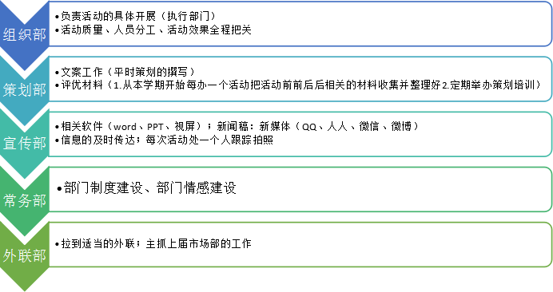

部门简介
成功起点创业社自2009年6月份成立以来，秉承着矿大人“学而优则用，学而优则创”的精神，践行着管理学院社团中心“服务源自真诚”的理念，为广大同学提供一个了解创业、走近创业、体验创业的立足于管理学院注重管理实践的特殊性质，成功起点创业社注重交流创业想法、学习创业经验、参观创业园区，从理论到实践，从了解到体验。同时，学生在创业文化月、创业挑战大赛之“娃哈哈”杯营销大赛等活动亲身体验创业的心酸与快乐，付出与收获。创业教育平台。
社团标志
组织结构
社歌
《我相信》 这是一群站在成功起点的成功人，他们怀揣梦想，激情洒脱！他们豪情满怀，壮志凌云！他们心潮澎湃，热情奔放！ 这是一群不怕吃苦的成功人，他们坚持！他们奋斗！他们拼搏！他们努力！ 这是一群勇往直前的成功人，他们自信、乐观！他们的未来只有这首《我相信》才能诠释成功人的自信与梦想，也只有他才能激励我们成功人勇往直前，努力拼搏！开拓创新，与时俱来充满希望！